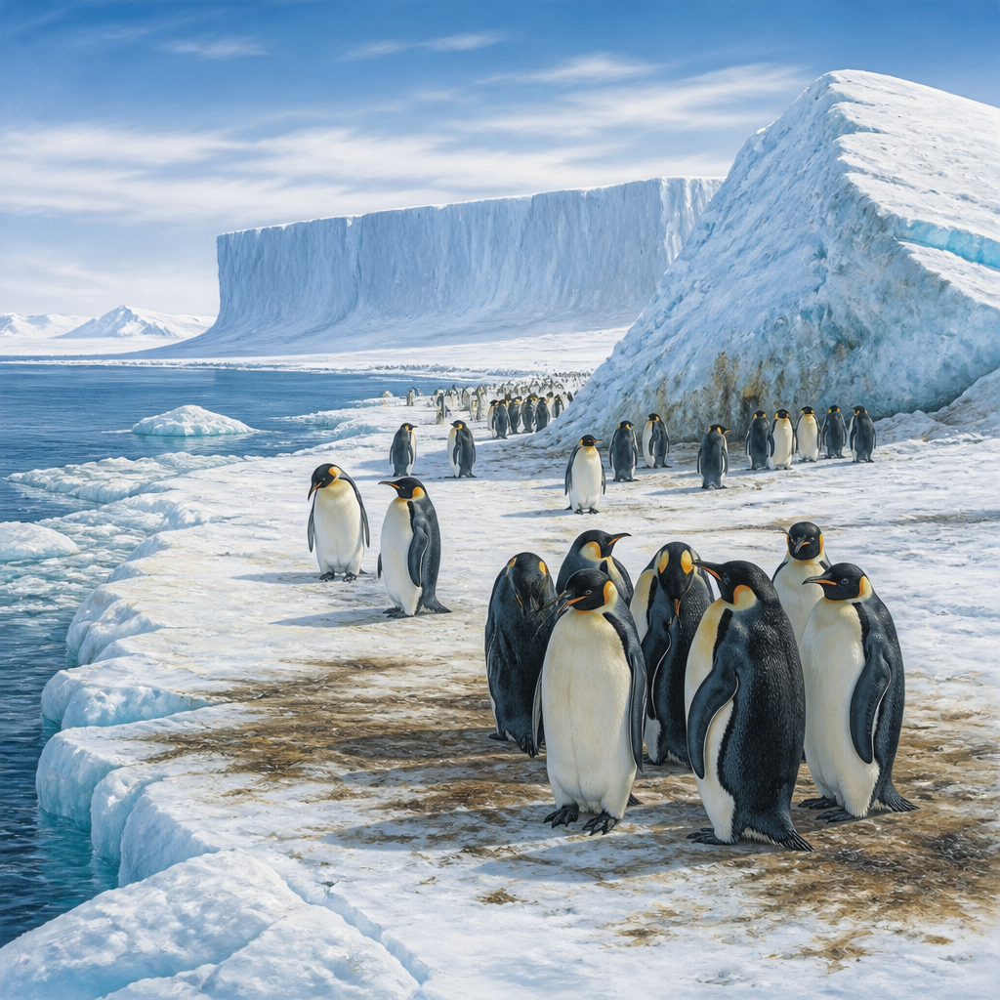
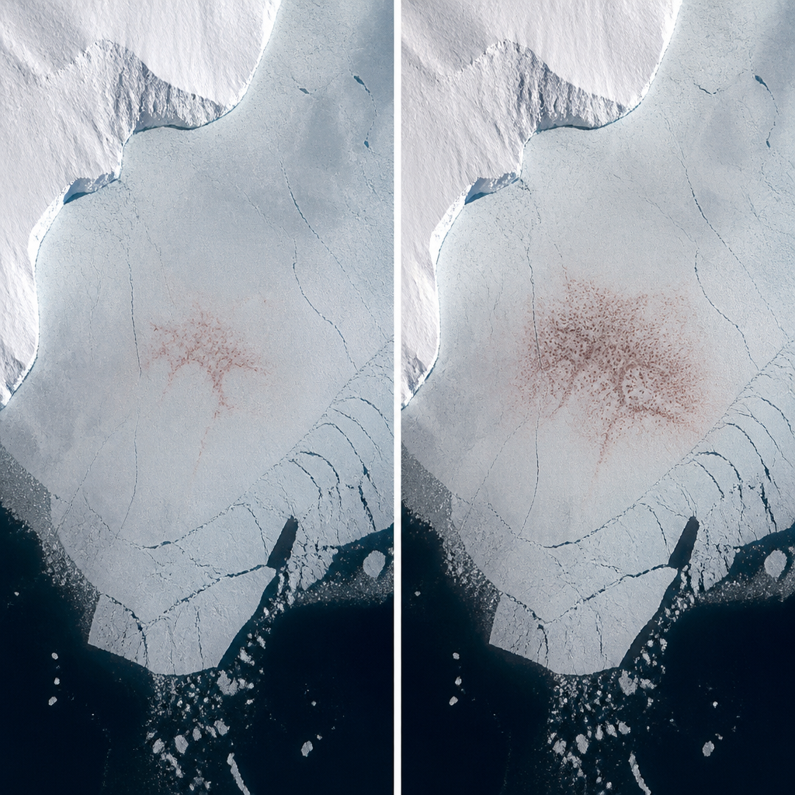

Le immagini satellitari raccolte in decenni mostrano colonie persistenti e una capacità di spostarsi tra ghiaccio marino, iceberg e piattaforme di ghiaccio.
Per i pinguini imperatore il ghiaccio vicino alla costa non è soltanto parte del paesaggio antartico: è il luogo in cui si riproducono, allevano i piccoli e fanno la muta. Per questo gli scienziati stanno cercando di capire come le colonie abbiano reagito, nel tempo, ai cambiamenti del ghiaccio marino. Due studi pubblicati nel 2026 hanno usato decenni di osservazioni satellitari per ricostruire una storia finora poco nota: molte colonie esistono da più tempo di quanto si pensasse e, quando le condizioni cambiano, alcuni gruppi possono spostarsi verso siti alternativi.
Il punto centrale è il ghiaccio marino ancorato alla costa, chiamato anche ghiaccio fisso: è ghiaccio del mare collegato alla linea costiera. Questo ambiente è indispensabile per la riproduzione dei pinguini imperatore, ma il suo andamento è ancora studiato meno di quello dell’estensione complessiva del ghiaccio marino antartico. Quest’ultima è rimasta relativamente stabile dalla fine degli anni Settanta fino al 2015, poi ha iniziato a diminuire dal 2016. Le proiezioni climatiche indicano che la tendenza potrebbe proseguire.
Le informazioni disponibili mostrano però differenze regionali. Uno studio cita una diminuzione del ghiaccio fisso nell’Antartide occidentale e nel mare di Weddell negli ultimi decenni, mentre nel mare di Bellingshausen e nell’Antartide orientale la tendenza è stata opposta. In un quadro di perdita prolungata del ghiaccio marino, alcuni modelli indicano che gli habitat dei pinguini imperatore potrebbero diventare inospitali entro la fine del secolo.
I satelliti Landsat non riescono a distinguere i singoli pinguini. Possono però individuare le macchie di guano, gli escrementi che si accumulano sul ghiaccio nei punti dove si concentrano migliaia di animali. Nelle immagini in falso colore, ottenute combinando luce infrarossa, rossa e verde, queste tracce diventano più facili da riconoscere. È un metodo che consente di seguire colonie lontanissime e difficili da raggiungere direttamente.
Landsat osserva l’Antartide in modo continuativo dai primi anni Ottanta e offre quindi una delle poche serie storiche sistematiche per queste colonie remote. I ricercatori dell’Università di Friburgo hanno scoperto che diciotto colonie erano presenti, in media, da diciassette anni prima della loro prima identificazione nota. La colonia di Smyley Island, nel mare di Bellingshausen, conta circa seimila pinguini e risulta esistere almeno dal 1989: circa due decenni prima di quanto fosse noto in precedenza.

La colonia di Smyley Island è stata seguita con particolare attenzione perché potrebbe aver subito un fallimento riproduttivo totale nel 2022, quando la copertura di ghiaccio marino antartico ha raggiunto un minimo record. Nelle immagini di quell’anno la colonia appare divisa: una parte dei pinguini si era trasferita su un grande iceberg incagliato vicino alla costa.
Nonostante condizioni di ghiaccio marino persistentemente basse negli anni successivi, la colonia ha continuato a comparire nelle immagini satellitari. In genere si è stabilita vicino agli iceberg, lungo il margine della piattaforma di ghiaccio. L’osservazione più recente riportata da Landsat, nel dicembre 2025, mostra ancora la colonia. La sua persistenza suggerisce che un singolo anno riproduttivo negativo, anche se totale, non segna necessariamente la fine di una colonia. Anni difficili possono dipendere anche da bufere di neve e predatori; il problema diventa più grave se gli insuccessi riproduttivi si ripetono anno dopo anno.
Un secondo studio ha analizzato quasi quarant’anni di dati Landsat, dello strumento ASTER sul satellite Terra della NASA e di altre fonti. ASTER è uno strumento che rileva l’energia emessa e riflessa dalla superficie terrestre. Il lavoro ha esaminato tre colonie disturbate dal distacco di iceberg o dalla rottura precoce del ghiaccio marino: Astrid, Mertz e SANAE.
I risultati indicano che i pinguini delle colonie Mertz e SANAE si sono spostati temporaneamente verso iceberg vicini, insenature o piattaforme di ghiaccio, prima di tornare nei luoghi di riproduzione precedenti. La colonia SANAE era stata osservata per la prima volta nel 1984 sul ghiaccio fisso di una baia riparata dell’Antartide orientale. Dopo un grande distacco di ghiaccio nel 2011, il sito è stato esposto a venti più forti e la colonia si è trasferita su ghiaccio di frattura, cioè ghiaccio associato a una spaccatura, in un’insenatura poco distante.
Lo spostamento non fu definitivo. Una parte del gruppo raggiunse un altro sito vicino, mentre un’altra tornò nel luogo originario nel 2016. Durante una stagione riproduttiva, pur essendo presente ghiaccio fisso stabile, gli animali raggiunsero la piattaforma di ghiaccio per radunarsi e riprodursi. Una scia sinuosa di guano nelle immagini Landsat ne ha mostrato il percorso. Entro il 2022 l’intera colonia era tornata sul ghiaccio fisso originario, dove ha continuato a riprodursi ogni anno.
Le colonie di pinguini imperatore possono persistere per decenni e, in alcuni casi, cambiare temporaneamente superficie o luogo di riproduzione. Questa flessibilità può essere un adattamento utile in un contesto di perdita del ghiaccio marino, ma da sola non basta necessariamente a compensarne gli effetti a lungo termine. Per capire il futuro di colonie così remote, i dati satellitari accessibili restano fondamentali.
Questo articolo l'hai letto sul blog di Meteo Radar: un'app che ti mostra da dove vengono i numeri, invece di limitarsi a dartelo. E ogni mattina ne trovi uno nuovo come questo.